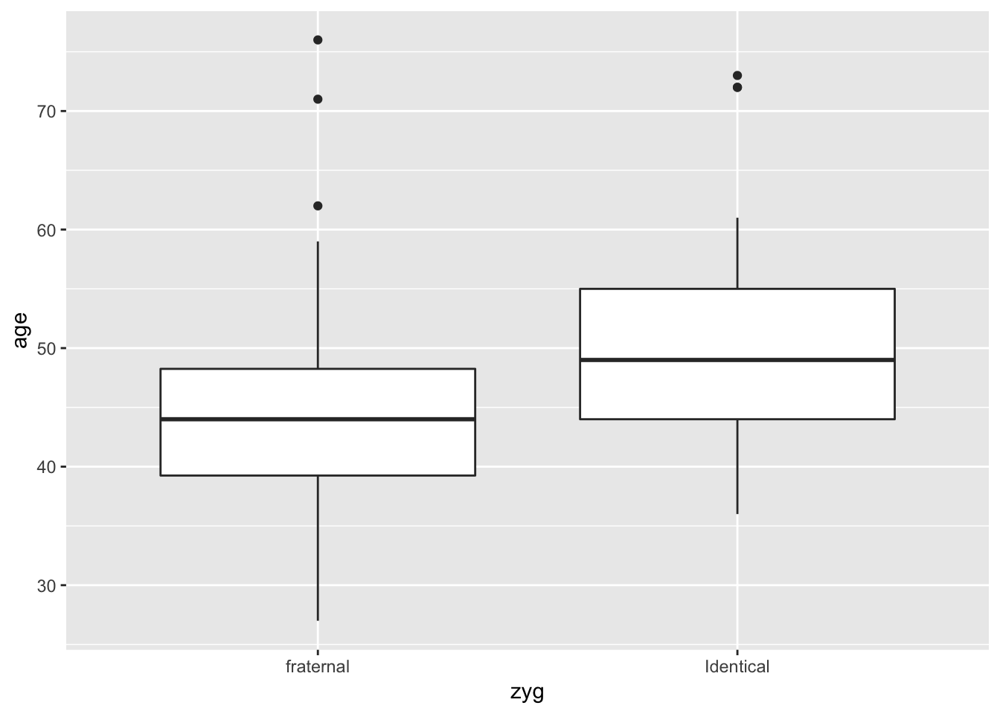
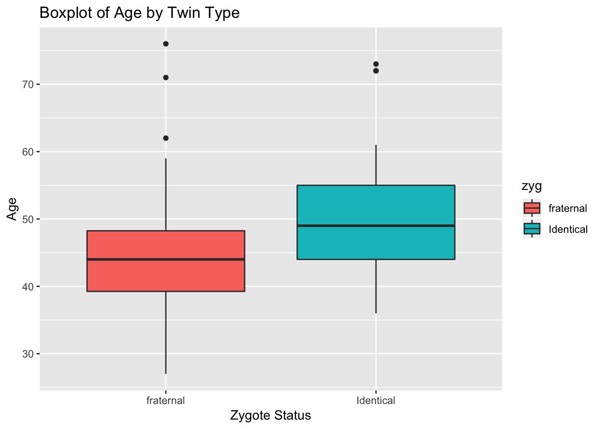
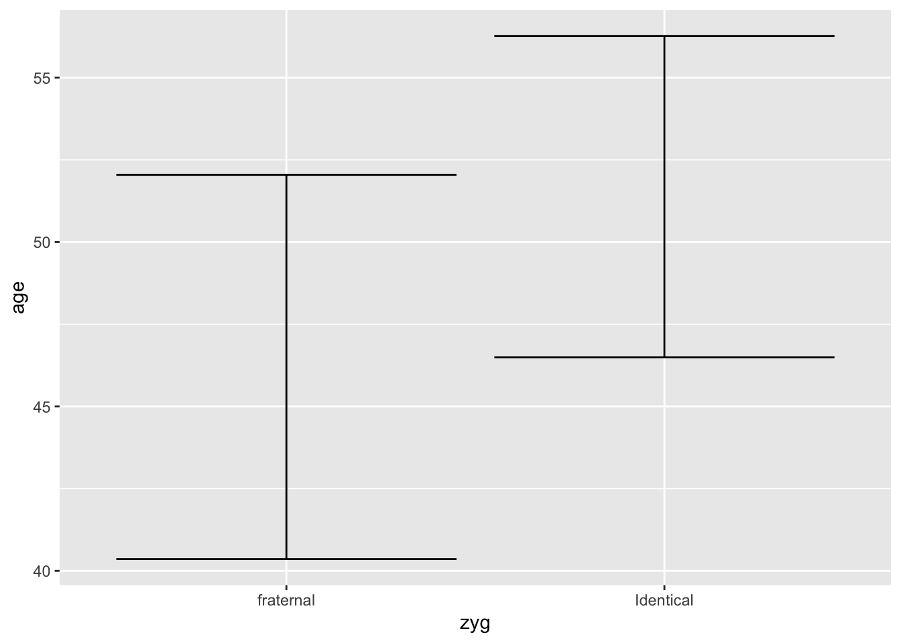
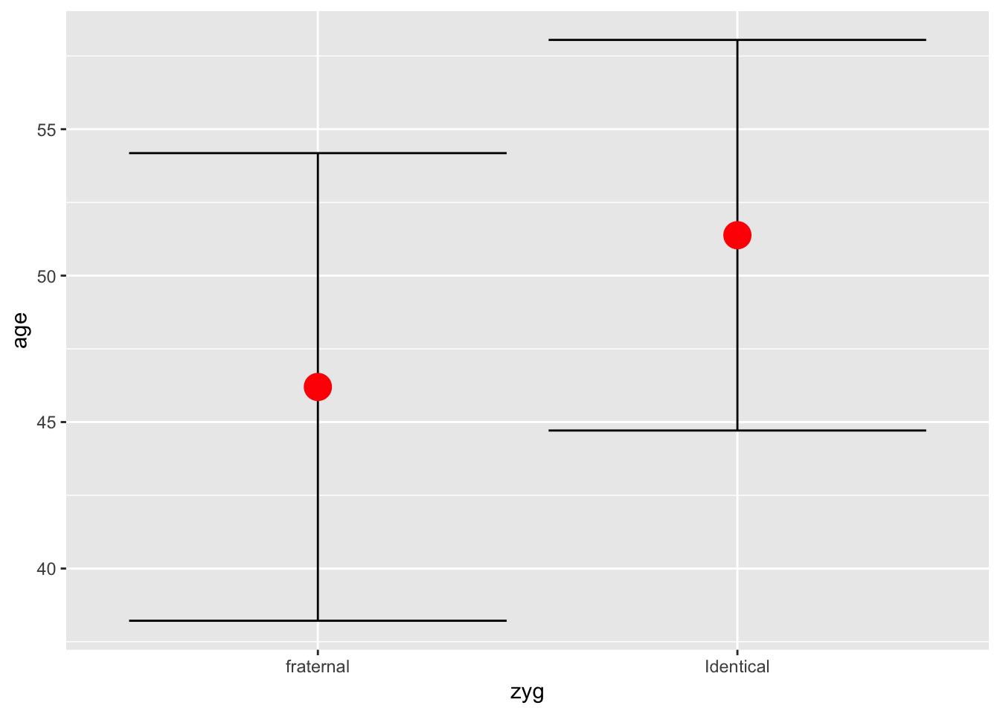

R Tutorial: Confidence Intervals
Created by Aaron Coyner
Overview
This tutorial provides an introduction to confidence intervals. Specifically, we will learn how to obtain confidence intervals for a population mean in R. Data sets and Rmarkdown files are available at: https://github.com/aaroncoyner/biostats-tutorials
Acknowledgements
This tutorial was adapted from Amber Lin's tutorials for PHPM 524: Introduction to Biostatistics at Oregon Health & Science University.
The template used for this tutorial is from Alison Presmanes-Hill
Setup
Install Packages
Do this once per machine.
install.packages('readr')
install.packages('tidyverse')
install.packages('skimr')
install.packages('Publish')Load Packages
Do this once per R session.
library(readr)
library(tidyverse)
library(skimr)
library(Publish)Import Data
- Copy
bone_density.csvto an easily accessible location - Use
read_csv()from thereadrpackage to import the csv - The argument supplied to
read_csv()is the url or path to the dataset - Finally, assign the data to an R object using
<-and call that object something simple likebone
bone <- read_csv('data/bone_density.csv')Initial Data Analysis
Base R
Use the head() function in your console to briefly check the structure of the data set.
head(bone)# A tibble: 6 x 32
id age zyg ht1 wt1 tea1 cof1 alc1 cur1 men1 pyr1 ls1
<int> <int> <chr> <int> <int> <int> <int> <int> <int> <int> <dbl> <dbl>
1 1.48e6 36 Iden… 162 55 7 14 2 0 0 0. 0.730
2 1.52e6 44 Iden… 167 60 0 28 23 22 0 0. 0.770
3 1.25e6 73 Iden… 160 76 42 14 14 8 1 25.0 0.760
4 1.49e6 47 Iden… 149 61 0 42 2 3 1 12.0 0.710
5 1.03e6 61 Iden… 159 62 56 0 0 0 1 0. 0.810
6 1.63e6 53 Iden… 161 68 35 35 0 0 1 24.6 0.820
# ... with 20 more variables: fn1 <dbl>, fs1 <dbl>, ht2 <int>, wt2 <int>,
# tea2 <int>, cof2 <int>, alc2 <int>, cur2 <int>, men2 <int>,
# pyr2 <dbl>, ls2 <dbl>, fn2 <dbl>, fs2 <dbl>, fndiff12 <dbl>,
# fndiff <dbl>, FSDIFF <dbl>, meanage <dbl>, stdage <dbl>, samp <int>,
# serrage <dbl>As you can see, head() cannot display all of our variables! So we need to use some tools that are designed for larger data sets and that are a bit more descriptive...
tidyverse + skimr
Glimpse essentially just provides us with a better view of our data than head().
glimpse(bone)Observations: 41
Variables: 32
$ id <int> 1479401, 1521701, 1248202, 1494101, 1034301, 1628601,...
$ age <int> 36, 44, 73, 47, 61, 53, 49, 55, 72, 44, 52, 58, 72, 4...
$ zyg <chr> "Identical", "Identical", "Identical", "Identical", "...
$ ht1 <int> 162, 167, 160, 149, 159, 161, 164, 165, 154, 151, 157...
$ wt1 <int> 55, 60, 76, 61, 62, 68, 72, 68, 81, 48, 53, 61, 48, 6...
$ tea1 <int> 7, 0, 42, 0, 56, 35, 21, 56, 14, 12, 28, 0, 14, 14, 0...
$ cof1 <int> 14, 28, 14, 42, 0, 35, 14, 0, 7, 0, 28, 21, 56, 7, 21...
$ alc1 <int> 2, 23, 14, 2, 0, 0, 9, 2, 0, 0, 1, 0, 0, 2, 0, 10, 9,...
$ cur1 <int> 0, 22, 8, 3, 0, 0, 12, 3, 0, 0, 1, 0, 0, 2, 0, 15, 8,...
$ men1 <int> 0, 0, 1, 1, 1, 1, 1, 1, 1, 0, 1, 1, 1, 2, 0, 0, 1, 0,...
$ pyr1 <dbl> 0.00, 0.00, 25.00, 12.00, 0.00, 24.65, 19.00, 0.00, 0...
$ ls1 <dbl> 0.73, 0.77, 0.76, 0.71, 0.81, 0.82, 0.67, 0.75, 0.71,...
$ fn1 <dbl> 0.64, 0.66, 0.56, 0.61, 0.64, 0.69, 0.74, 0.59, 0.55,...
$ fs1 <dbl> 1.09, 1.10, 1.05, 1.09, 1.12, 1.11, 1.14, 1.14, 0.93,...
$ ht2 <int> 163, 167, 161, 154, 162, 161, 164, 165, 160, 153, 160...
$ wt2 <int> 54, 43, 76, 94, 58, 60, 68, 71, 80, 52, 55, 73, 50, 6...
$ tea2 <int> 0, 0, 7, 0, 21, 0, 21, 21, 0, 91, 28, 0, 14, 0, 0, 7,...
$ cof2 <int> 35, 28, 7, 0, 35, 99, 12, 28, 0, 0, 0, 14, 42, 28, 28...
$ alc2 <int> 0, 13, 14, 0, 0, 0, 14, 0, 0, 0, 0, 0, 0, 14, 0, 14, ...
$ cur2 <int> 0, 20, 10, 1, 0, 1, 11, 1, 0, 0, 3, 2, 0, 13, 0, 10, ...
$ men2 <int> 0, 0, 1, 2, 1, 1, 1, 1, 1, 2, 1, 1, 1, 0, 0, 0, 1, 0,...
$ pyr2 <dbl> 25.50, 30.00, 40.00, 20.00, 29.75, 30.00, 36.30, 20.2...
$ ls2 <dbl> 0.70, 0.71, 0.66, 0.76, 0.85, 0.77, 0.74, 0.64, 0.63,...
$ fn2 <dbl> 0.61, 0.61, 0.49, 0.66, 0.69, 0.67, 0.74, 0.65, 0.56,...
$ fs2 <dbl> 1.20, 0.96, 1.04, 0.99, 1.03, 1.08, 1.10, 1.15, 1.01,...
$ fndiff12 <dbl> 0.03, 0.05, -0.07, -0.05, -0.05, -0.02, 0.00, -0.06, ...
$ fndiff <dbl> 0.03, 0.05, -0.07, -0.05, -0.05, -0.02, 0.00, -0.06, ...
$ FSDIFF <dbl> -0.11, 0.14, -0.01, 0.10, 0.09, -0.03, 0.04, -0.01, -...
$ meanage <dbl> 51.38095, 51.38095, 51.38095, 51.38095, 51.38095, 51....
$ stdage <dbl> 10.74000, 10.74000, 10.74000, 10.74000, 10.74000, 10....
$ samp <int> 21, 21, 21, 21, 21, 21, 21, 21, 21, 21, 21, 21, 21, 2...
$ serrage <dbl> 2.343660, 2.343660, 2.343660, 2.343660, 2.343660, 2.3...However, skim() computes summary statistics for us, as well. For instance, we get the mean, standard deviation, and quartiles for each variable. It even plots mini histograms for us!
skim(bone)Skim summary statistics
n obs: 41
n variables: 32
── Variable type:character ────────────────────────────────────────
variable missing complete n min max empty n_unique
zyg 0 41 41 9 9 0 2
── Variable type:integer ──────────────────────────────────────────
variable missing complete n mean sd p0 p25 p50
age 0 41 41 48.85 11.77 27 42 47
alc1 0 41 41 4.07 6.72 0 0 1
alc2 0 41 41 5.29 8.14 0 0 0
cof1 0 41 41 14.56 15.8 0 0 7
cof2 0 41 41 23.15 21.09 0 7 21
cur1 0 41 41 3.66 6.77 0 0 0
cur2 0 41 41 5.07 7.55 0 0 1
ht1 0 41 41 161.41 5.23 149 159 162
ht2 0 41 41 161.59 4.67 150 159 162
id 0 41 41 1476713.54 276086.32 1e+06 1273101 1528201
men1 0 41 41 0.71 0.64 0 0 1
men2 0 41 41 0.63 0.66 0 0 1
samp 0 41 41 20.51 0.51 20 20 21
tea1 0 41 41 19.32 18.11 0 1 14
tea2 0 41 41 15.07 21.17 0 0 7
wt1 0 41 41 65.39 14.89 47 57 61
wt2 0 41 41 61.83 11.89 43 54 58
p75 p100 hist
53 76 ▂▃▇▇▃▃▁▃
6 28 ▇▁▂▁▁▁▁▁
9 35 ▇▁▁▂▁▁▁▁
28 56 ▇▂▁▂▁▁▁▁
35 99 ▇▅▇▂▁▁▁▁
3 28 ▇▁▁▁▁▁▁▁
8 30 ▇▂▂▁▁▁▁▁
165 171 ▂▂▁▃▆▇▃▁
165 170 ▁▃▁▅▅▇▂▂
1628601 2609801 ▃▃▇▆▁▁▁▁
1 2 ▆▁▁▇▁▁▁▂
1 2 ▇▁▁▇▁▁▁▂
21 21 ▇▁▁▁▁▁▁▇
35 56 ▇▃▂▂▂▂▁▂
21 91 ▇▅▁▁▁▁▁▁
70 114 ▅▇▆▂▁▁▁▁
68 94 ▁▇▇▂▂▁▁▁
── Variable type:numeric ──────────────────────────────────────────
variable missing complete n mean sd p0 p25 p50 p75 p100
fn1 0 41 41 0.66 0.1 0.42 0.6 0.66 0.72 0.9
fn2 0 41 41 0.66 0.12 0.38 0.61 0.66 0.74 0.88
fndiff 0 41 41 -0.019 0.091 -0.25 -0.06 -0.03 0.05 0.16
fndiff12 0 41 41 -0.019 0.091 -0.25 -0.06 -0.03 0.05 0.16
fs1 0 41 41 1.1 0.13 0.7 1.05 1.11 1.15 1.42
fs2 0 41 41 1.07 0.15 0.64 1.01 1.08 1.16 1.33
FSDIFF 0 41 41 -0.015 0.12 -0.42 -0.1 -0.03 0.07 0.19
ls1 0 41 41 0.79 0.13 0.5 0.71 0.8 0.87 1.04
ls2 0 41 41 0.76 0.14 0.47 0.65 0.77 0.86 0.98
meanage 0 41 41 48.85 2.62 46.2 46.2 51.38 51.38 51.38
pyr1 0 41 41 4.36 9.33 0 0 0 0 33.75
pyr2 0 41 41 27.51 14.82 5 14 25.5 39 64.5
serrage 0 41 41 2.56 0.23 2.34 2.34 2.34 2.79 2.79
stdage 0 41 41 11.59 0.88 10.74 10.74 10.74 12.48 12.48
hist
▂▂▅▇▆▃▃▂
▁▃▃▅▇▅▅▃
▁▂▂▃▇▃▃▂
▁▂▂▃▇▃▃▂
▁▁▁▆▇▃▁▁
▁▁▁▂▇▇▆▁
▁▁▁▂▇▅▇▃
▂▂▃▇▆▃▃▃
▃▁▇▃▇▇▆▅
▇▁▁▁▁▁▁▇
▇▁▁▁▁▁▁▁
▇▇▇▇▇▆▁▁
▇▁▁▁▁▁▁▇
▇▁▁▁▁▁▁▇Visualization
Now that we've reviewed some summary statistics, the next step is to visualize our data. This will give us a better idea of the spread of the data for our variables of interest.
Boxplots
We can also look at a boxplot of the age distribution by twin type. To do so, we'll use ggplot(). There are a few things going on in this command, so we'll run through them one by one just to refresh your memory. First, we are calling ggplot() to tell R we'd like to create a plot. Next, we tell ggplot() which data set we'd like to use by supplying it as the first argument. Then we specify what x and y variables from the data set we'd like to use using the aes() (aesthetics) command. If we stop here, ggplot will know what data set we want to use and what variables we wish to model, but it won't know how we want them displayed and we'll just get an empty plot:
ggplot(bone, aes(x = zyg, y = age))
So, we tell ggplot() that we'd like to use the specified variables from the specified data set to make a boxplot by adding + geom_boxplot() after our call to ggplot().
ggplot(bone, aes(x = zyg, y = age)) +
geom_boxplot()
Great! But this plot is a bit...bland. Let's take advantage of ggplot() and make it more aesthetically pleasing!
ggplot(bone, aes(x = zyg, y = age, fill = zyg)) +
geom_boxplot() +
ggtitle("Boxplot of Age by Twin Type") +
xlab('Zygote Status') +
ylab('Age')
Confidence Intervals
Again, we supply our basic arguments to ggplot(). Using the stat_summary() argument, we tell ggplot() that we'd like to compute both the mean and confidence interval for each group. In the first stat_summary() argument, we ask ggplot() to compute the 95% confidence interval using the mean_cl_normal function and represent it as error bars. We use the fun.data argument (rather than fun.y) because we wish to return a set of numbers (the high and low of each interval) rather than a single number (such as the mean).
ggplot(data = bone, aes(x = zyg, y = age)) +
stat_summary(geom = "errorbar",
fun.data = mean_cl_normal)
Now we add a second stat_summary() argument and specify that we'd like to compute and represent the mean of each group as a red point on our chart.
ggplot(data = bone, aes(x = zyg, y = age)) +
stat_summary(geom = "errorbar",
fun.data = mean_cl_normal) +
stat_summary(geom = "point",
fun.y = mean,
color = "red",
size = 6)
mean_cl_normal computes a 95% confidence interval by default. If we want to calculate the 99% confidence interval, we make use of the fun.args parameter. This allows us to pass additional arguments to the function we've called, in the form of a list. Below, we compute the 99% confidence interval:
ggplot(data = bone, aes(x = zyg, y = age)) +
stat_summary(geom = "errorbar",
fun.data = mean_cl_normal,
fun.args=list(conf.int=0.99)) +
stat_summary(geom = "point",
fun.y = mean,
color = "red",
size = 6)
Confidence Intervals

When we compute two-sided confidence intervals, we are computing the area between the two tails of the distribution. When we compute one-sided confidence intervals, we are computing the area from one tail up to (but not including) another tail. So, a one-sided 95% confidence interval includes more of the tail than a two-sided 95% confidence interval.
Two-sided
For a Variable
Let's compute 95% and 99% confidence intervals for the mean population age (bone$age). We'll use the ci.mean() command from Publish. By default, this command produces a 95% confidence interval.
ci.mean(bone$age) mean CI-95%
48.85 [45.14;52.57]Now, let's compute the 99% confidence interval. Remember that \(\alpha\) is our significance level (i.e. the probability of incorrectly rejecting the null hypothesis). To obtain a 99% confidence interval, we simply set \(\alpha = 0.01\), since \(1 - confidence~level = \alpha\).
ci.mean(bone$age, alpha = 0.01) mean CI-99%
48.85 [43.88;53.82]For Groups within a Variable
Let's compute a 95% confidence interval of the mean population age for fraternal and identical twins, denoted by the zyg variable. Remember, the ~ is R's way of saying "by"" (i.e. "compute this by this"). So here, we compute age by zyg. Because we've only supplied R with the variables of interest, but haven't supplied the actual data set, we do so using the data argument.
ci.mean(age ~ zyg, data = bone) zyg mean CI-95%
fraternal 46.20 [40.36;52.04]
Identical 51.38 [46.49;56.27]Theoretically, we could compute confidence intervals for age based on twin status and any other number of predictors. For example:
ci.mean(age ~ zyg + men1, data = bone) men1 zyg mean CI-95%
0 fraternal 39.56 [33.98;45.13]
0 Identical 42.00 [37.97;46.03]
1 fraternal 54.33 [44.18;64.49]
1 Identical 57.42 [51.02;63.81]
2 fraternal 39.50 [-30.38;109.38]
2 Identical 48.00 [35.29;60.71] One-sided
When we use z- or t-critical values for a one-sided 95% confidence limit, the critical values that we use are a bit different. In this instance, we are putting all 5% of the area into the lower or upper tail of the distribution depending on whether we want to calculate a one-sided lower bound or upper bound limit. For a 2-sided 95% confidence interval, we split up the area and put 2.5% in the lower and upper tails of the distribution. Refer to the image above to help visualize this idea.
Therefore, to calculate a one-sided 95% confidence bound (lower or upper), we use the z- or t-critical value for a 2-sided 90% confidence limit. Let’s say that we want to calculate a one-sided 95% upper confidence bound of age by twin type (fraternal or identical).
ci.mean(age ~ zyg, data = bone, alpha = 0.10) zyg mean CI-90%
fraternal 46.20 [41.37;51.03]
Identical 51.38 [47.34;55.42]Here, we are only interested in the upper confidence bounds. We can interpret this output as – “Average age of the identical twins is approximately 51 years and we are 95% confident that it is, at most, 55 years”. Similarly, we can interpret the mean age of fraternal twins as – “Average age of the fraternal twins is approximately 46 years and we are 95% confident that it is, at most, 51 years.”
© 2018 Aaron Coyner. All rights reserved.